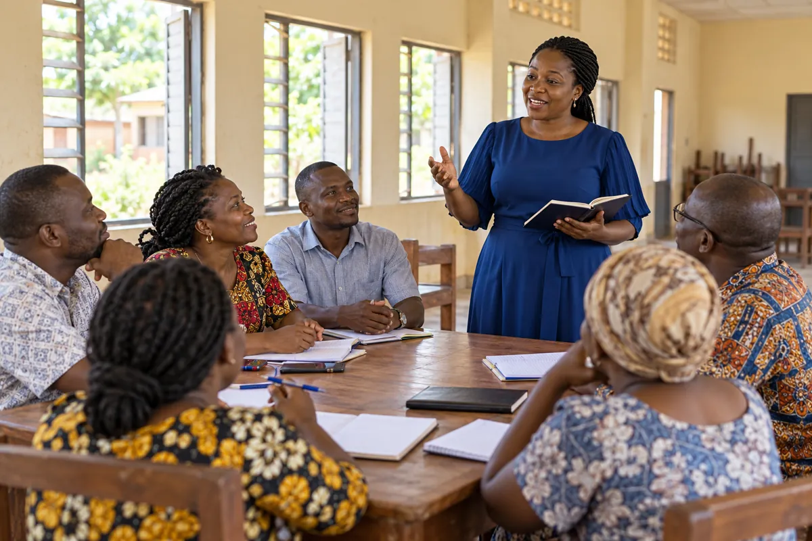

Educator growth
Fellowship, professional connections, advocacy and practical growth.
Explore programsGet equipped
Explore the gatherings, community and opportunities COCEGN offers Christian educators.

Fellowship, professional connections, advocacy and practical growth.
Explore programsConferences, retreats, business summits and celebrations.
Events & mediaNetwork updates and encouragement from COCEGN.
Subscribe for updates